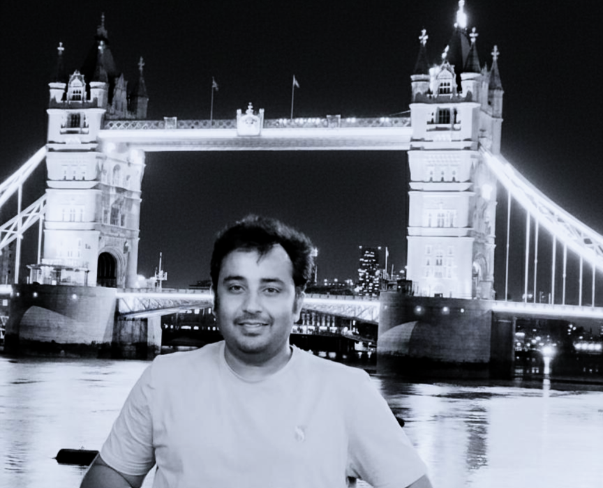

|

|
Gaurav Tiwari
Associate Professor
Hi! I am an Associate Professor in the
Department of Civil Engineering
at
Indian Institute of Technology, Kanpur
where I lead the Engineering Rock Mechanics Lab. My research focuses on experimental, numerical and uncertainty analyses of rock materials and structures, with emphasis on dynamic behavior, fracture processes, and stability of rock excavations. In addition to research, I am deeply involved in teaching courses on Rock Mechanics, Soil Mechanics, Foundation Analysis, Mechanics of Solids and Risk and Reliability in Geotechnical Engineering, and I actively mentor undergraduate, postgraduate, and doctoral students. I strive to create a research-oriented and conceptually strong learning environment, integrating laboratory-based insights and computational approaches into classroom teaching.
|
Biography
I received my bachelor's degree from
MBM Govt Eng. College Jodhpur in 2011, M.Tech from
Indian Insitute of Technology (IIT) Roorkee in 2013
(Advisor: Narendra Kumar Samadhiya) and PhD from
Indian Institute of Science, Bengaluru in 2018 (Advisor: Madhavi Latha G). Prior to joining Indian Institute of Technology (IIT) Kanpur, I was a Postdoctoral Research Associate at
Indian Institute of Science, Bengaluru. My broad research area at IISc was experimental rock mechanics with focus on rate dependent behaviour of rocks and application of probabilistic and statistical methods for reliability analysis in rock engineering. My current research focuses on dynamic response of rocks, grain based modelling of rocks, hybrid reliability methodologies for rock engineering considering polymorphic uncertainty modelling and THMC modelling of rocks for energy storage applications.
- Associate Professor, Department of Civil Engineering, IIT Kanpur, India (2024 – Present)
- Assistant Professor, Department of Civil Engineering, IIT Kanpur, India (December 2018 – 2024)
- Post-Doctoral Research Associate, Indian Institute of Science (IISc), Bangalore (January 2018 – November 2018)
Research Interests
Geotechnical Engineering
Experimental Rock Mechanics
Probabilistic Rock Engineering
Numerical Modelling in Rock Engineering
AI/ML in Rock Engineering
Stochastic THMC Modelling in Rock Engineering
Probabilistic Grain Scale Modelling in Rock Engineering
|